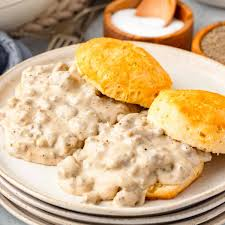

Biscuits and Gravy!

Enjoy this classic Southern breakfast dish, perfect for a hearty start to your day!
This biscuits and gravy recipe is a comforting breakfast favorite!
Ingredients
- 2 cups all-purpose flour
- 1 tbsp baking powder
- 1/2 tsp salt
- 1/2 cup butter, cold and cubed
- 3/4 cup milk
- 1 lb breakfast sausage
- 2 cups milk (for gravy)
- 1/4 cup all-purpose flour (for gravy)
- Salt and pepper to taste
Instructions
- Preheat the oven to 450°F (230°C).
- In a bowl, mix flour, baking powder, and salt.
- Cut in the cold butter until the mixture resembles coarse crumbs.
- Stir in the milk until just combined, then turn onto a floured surface and knead gently.
- Roll out to 1-inch thickness and cut into rounds.
- Place on a baking sheet and bake for 12 -15 minutes until golden.
- Meanwhile, cook the sausage in a skillet until browned.
- In a separate pot, whisk together 2 cups milk and 1/4 cup flour over medium heat until thickened.
- Season with salt and pepper, then stir in the cooked sausage.
- Serve the biscuits topped with the sausage gravy.
Back to Recipes